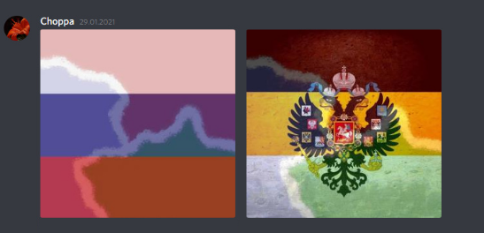

ㅤ
Chopa (Чопа)
Чопа - Всего 2 года назад (Момент написания 2023 год), был самой противоречивой личностью в нашем клане. Одно его упоминание на сервере вызвало споры, и конфликты между участниками, он повлиял очень сильно на ход истории нашего клана. С его именем в первую очередь связано создание Великого Совета, который внес огромный вклад и определил веху развития сервера.
Chopa находился в клане почти с момента его создания, клан был создан 20 Января 2021 года, а зашел он спустя пару дней его создания а именно 28.01.2021
В клане есть негласное разделение членов, по временным "эпохам". Так вот, Chopa входит в первый состав клана. Т.е в тот костяк что составлял активную часть клана, раньше он был известен всем под ником "Кусок Милоты"
В клане есть негласное разделение членов, по временным "эпохам". Так вот, Chopa входит в первый состав клана. Т.е в тот костяк что составлял активную часть клана, раньше он был известен всем под ником "Кусок Милоты"
Он был сильным игроком, и быстро продвигался в ранговой системе нашего клана зарабатывая очки - победы в Хал оф Фейм.
В ранний период игры почти не существовало кланов поэтому участники клана RL, в конце устраивали бои между собой. Chopa не редко становился тем, против кого объединялись игроки.
29.01.2021 - Важная дата в истории нашего сервера, именно в этот день был создан флаг нашего клана, Дву главный имперский Орел и линии исходящие от этого орла формирующие иконку Территориала. Флаг созданный уже почти 3 года назад (29.12.2023) стал настоящим символом клана, для тех кто в клане уже давно он имеет особое значение, с этим знаменем связано очень многое в истории нашего сервера. Флаг даже появлялся в самой игре на не долгий промежуток.
Вот собственно сами первые версии нашего флага, и само сообщение с флагом.

Chopa первым понял что появилась необходимость в реформировании клана в связи с его ростом, пытаясь протолкнуть свои идеи Главе Клана, он нередко прибегал к радикальным методам, нарушая правила сервера.
И собственно 05.02.2021 Случается первый "бунт" в клане, игроки выражали свое недовольство абсолютной властью Маэстро, но выступления были беспощадно подавлены а участники посажены в гулаг.
Но долго так не могло продолжатся, и в тот же день в связи большой поддержкой идеи создание совета идея предложенная Анархик Республикой и Chopa находит поддержку сред участников клана. Создается - Великий Совет.
С этим органом власти связано очень много в истории нашего сервера, созданный как совещательный в дальнейшем он не редко брал на себя всю полноту власти когда такого требовала обстановка.
С этим органом власти связано очень много в истории нашего сервера, созданный как совещательный в дальнейшем он не редко брал на себя всю полноту власти когда такого требовала обстановка.
На следующий день 06.02.2021 Chopa предлагает еще один вариант для флага, но тот не находит той любви и поддержки среди участников клана. Стоит отметить что этот флаг хоть и не был утвержден, но часто мелькал в "Анти RL" организациях и считался "радикальным".
Стоит отметить, что у флага был свой символизм - Красный методы с помощью, которых клан достигал своих целей, корона с права снизу - Символ Абсолютной власти нашего главы - Маэстро . Звезды в центре символизировали совет. Помощник Главы Сервера, и члены самого совета. Гербы на белой линии - Те кланы, что вошли в состав нашего сервера.
После выступлений недовольных были внесены ряд поправок в правила, с которыми наш герой опять-же не был согласен. Пойдя на уступки выступающим Маэстро Чара возможно посчитал что сдал позицию перед "толпой", тут то и выражается особый характер нашего сервера на первых этапах, а именно не приветствие сепаратистских настроений и предателей, появляется термин "cепар" . Отношение к революционерам становится еще жоше.
22.03.2021 - Chopa был замучен на 1 день, из-за перепалки с Маэстро. Его выгоняют с совета.
Как только проходит мут, Chopa упрекает Главу клана в том, что тот приглашает людей из клана, который только что был распушен. Он видет в этом что-то "низкое" и "грязное" на этой почве возникает новый конфликт.
Мут на два дня и дальнейший бан 07.03.2021.
Как только проходит мут, Chopa упрекает Главу клана в том, что тот приглашает людей из клана, который только что был распушен. Он видет в этом что-то "низкое" и "грязное" на этой почве возникает новый конфликт.
Мут на два дня и дальнейший бан 07.03.2021.
Идеи и предложения этого уважаемого господина сбывались, и клан сам приходил к тем решениям которые были сформированы еще в самом начале. Скорее всего он просто опередил свое время, и не был понят.
В первое время после бана он еще проявлял активность, создавая свой клан и пытаясь его развивать. Но Клан RL, не дал ему это сделать, специально созданный аппарат вербовал членов клана Chopu и уничтожал его из внутри. Его клан разложился и так и не смог перерасти в что-то большее.
В первое время после бана он еще проявлял активность, создавая свой клан и пытаясь его развивать. Но Клан RL, не дал ему это сделать, специально созданный аппарат вербовал членов клана Chopu и уничтожал его из внутри. Его клан разложился и так и не смог перерасти в что-то большее.
14.05.2021 - Почти спустя месяц Chopa был амнистирован, его радикализм упал и он стал обычным членом нашего клана, проявляя активность от случая к случаю.
Он участвовал в деятельности политической партии - "Процветающий RL" (Подробнее об этом будет написано в отдельном разделе)
Возвращен в совет, и проработав там совсем не долго он уходит из активной жизни нашего клана.
Он участвовал в деятельности политической партии - "Процветающий RL" (Подробнее об этом будет написано в отдельном разделе) Возвращен в совет, и проработав там совсем не долго он уходит из активной жизни нашего клана.
Chopa - Пример сильной и не понятой любви, желая сделать лучше он прибегал к радикальным методам опережая время предлагая те идеи, которые было невозможно реализовать в тех "диких" условиях становления Территориала. Сложно не отдать ему должное, он навсегда останется в нашей памяти как один из великих, его имя не за зря занесено сюда.
Слава RL, Легендам Слава!
ㅤ